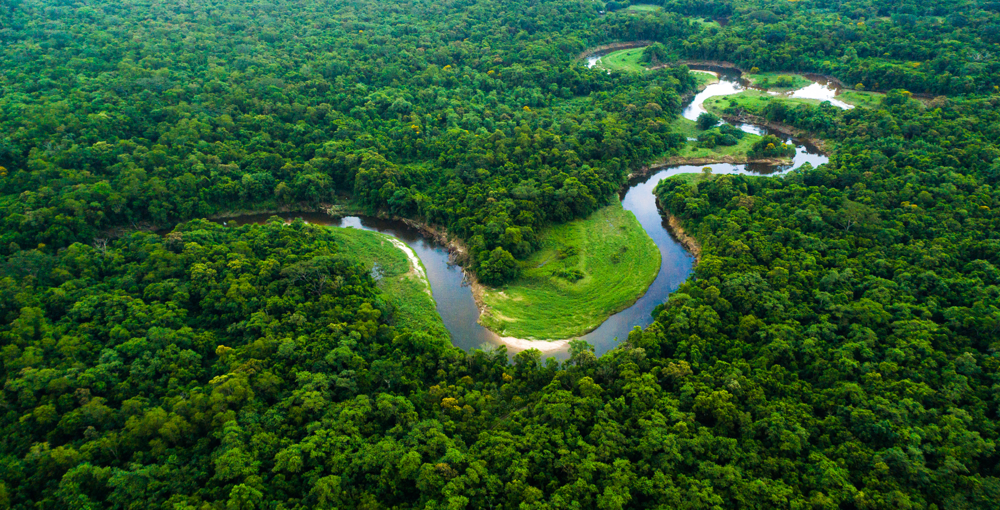
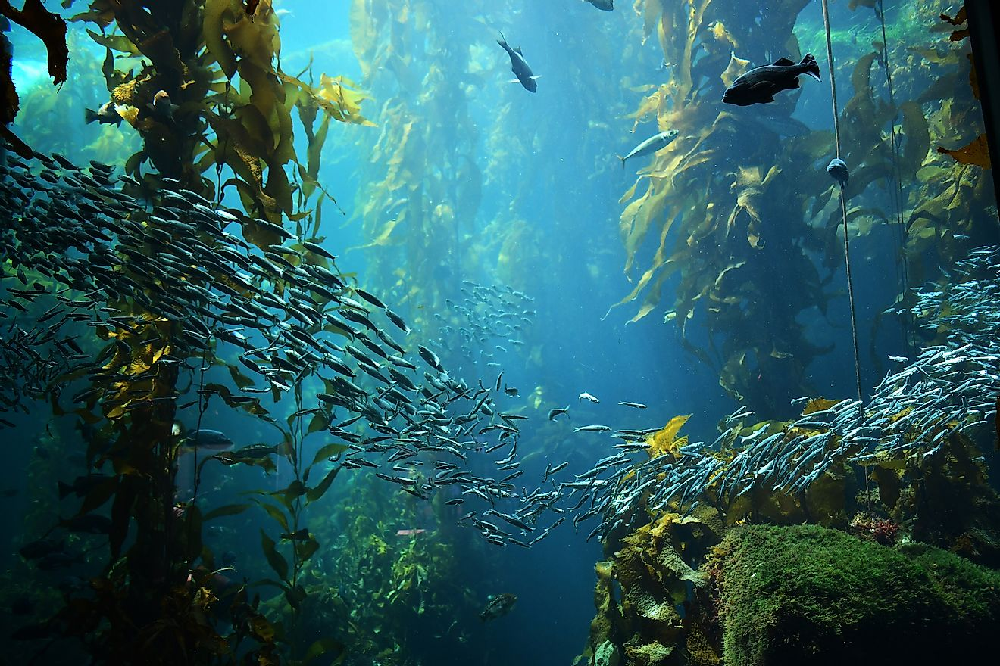

This week, we sat down with the awesome David Kim from CyanoCapture. In this edited conversation, David discusses his mission to back early-stage decarbonisation start-ups, his perspectives on algae-tech, and some resources he's found inspiring on his journey so far.

I came up with the idea a couple of years ago while studying respiratory systems in the human body. I noticed something quite similar that cyanobacteria do with co2 transport in and outof the cell. I then wanted to ask the question, what if we treated the planet as one big body with the lungs and CO2 generating area in another. Can we try mitigate co2 release from emission sites, and what better organism is there to do this job than cyanobacteria? I founded a team back in January 2021 after pitching the idea at a biotech hackathon at Oxford. We wanted to use the best GM technology we have at the University of Oxford, apply it to the best known strain of cyanobacteria, and combine the two things. What we're seeing in the lab is a 3x improvement in this strains ability to capture co2. We got funding in June 2021, and then we went on to win the student X PRIZE carbon award in November. Since then, we've been using that money to work really hard in the lab, and we've produced our own GM strain which we are patenting and now want to commercialise.
We are using our own proprietary photobioreactor design. As you may know, there are various ways to grow microalgae at scale. One of them is the raceway pond, flat panel designs, and columnar or tubular designs. One we are going with resembles a flat panel design crossed with a raceway pond. We pump flue gases directly into out PBRs from industry, the photobioreactors then heat up to the optimum temperature using a clever negative feedback mechanism. We also use a really scalable modular design, which we think will help us fit the needs of the industries that want to pilot our technology.

Since the microalgal market crashed about 10 years ago we haven't heard much from this space. However, I think we'll see a resurgance. That's because the market price for carbon tripled in 2020/2021, which suddenly enabled carbon fixation technologies like microalgae cultivation to become profitable. The question remains, which microalgae strains will be commercialised? In the past, people have worked with spirulina because those produce things like nutraceuticals, pigments, dyes and health foods. Those were the top tier, high market things which you can commercialise. Now, I think companies like us are deciding to purely capture as much carbon as possible, which is why we're using Synechococcus. Over time I think there'll be slight divergence regarding how microalgae cultivation will play out in the next five years.
Absolutely. We are currently looking to enter B2B partnerships with other people in this space for this purpose. In the last few years, plenty of companies have emerged who can turn biomass into various solid materials including concrete, cement, and other building materials which will permanently store carbon. We are looking to partner with those teams and supply them with our biomass and free fatty acids, if they can do something useful with it.

A large challenge is that people struggle to understand what direct capture is, and why it's not really a viable technology. If you work out the energy costs of doing those operations and direct air capture, it's barely net negative. All the energy involved in heating the absorbent, compressing pressurised co2 and transporting it across vast distances to bury it underground is very intensive. The energy input for that emits plenty of CO2, and that's where microalgae cultivation has an advantage. We produce biomass or 16-C free fatty acids molecules, and not just co2 at the end like other carbon capture companies. In addition, despite our operational costs being almost tenfold lower than direct air capture, our technology isn't proven yet at scale. As a result, my challenge lies in persuading investors and these industries why our technology is superior, and getting people to believe in algal based carbon solutions again.
Are few things are next. We've proven enough already in the lab to start scaling out a pilot project. We aim to do a 500 to 1000 tonne a year CO2 capture installation in 2023. That's going to demonstrate to the world that our technology genuinely works when planted and capturing carbon next to a power station or cement factory. Whilst that is going on, we are continuously improving our strain, and continuously improving our photobioreactoer design.

In terms of advice, it's important that you never lose sight of the mission. In order to get through those tough days, and obstacles, you need to remember that overall mission, which makes everything okay again, and helps you find solutions. It's not like another job where you do something because you need to for your boss or for money, this start-up is potentially something which can change the course of the century. From my point of view, there's nothing better to do right now for the world than help industries decarbonize affordably.
When it comes to resources, I love this book called "Factfulness" by Hans Rosling. It may have nothing to do with climate change or business, but it's about having a rational perspective on matters. Furthermore, when it comes to considering the current state of the world, and how people will respond in the next few decades, this book has really honed in my vision, and made me very optimistic about the future. The key message is that the world is a lot better than you think it is, despite what the media leads you to believe, and its owed to people who genuinely believe optimistically in the future that humanity's makingprogress in the right direction.
Interviewer: Peter Green